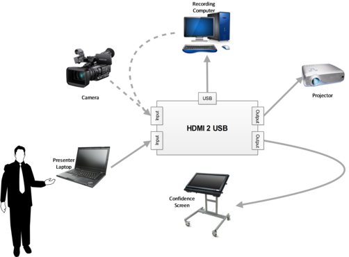

HDMI2USB - Jahanzeb Firmware
Use the misoc firmware
This firmware is obsolete and now read-only.
This firmware has been replaced by the misoc firmware. This information is kept around for historical reasons.
The firmware was original developed by Jahanzeb Ahmad using hand coded VHDL/Verilog and with cores from OpenCores and the Xilinx LogiCORE IP Core Generator.
This firmware is obsolete and now read-only.
Use the misoc firmware
FIXME(write script!) If you are an testing user, please try our quick setup script from the HDMI2USB-firmware-prebuilt repository.
There are multiple ways to load the Digilent Atlys board with firmware. The loading process occurs in 3 stages;
- [Stage -1] - Set jumpers on the FPGA correctly.
- [Stage 0] - Flash the Cypress FX2 chip with firmware suitable for flashing the FPGA
- [Stage 1] - Flash the Xilinx Spartan-6 FPGA with HDMI2USB firmware
- [Stage 2] - Flash the Cypress FX2 chip with HDMI2USB firmware (nothing happens until you complete the following steps)
- [Stage 3] - Pull USB plug out of the computer, plug the USB plug back into the computer, the HDMI2USB device should appear.
For each stage you must use at most ONE of the options.
Prebuilt firmware blobs for the HDMI2USB can be found in the HDMI2USB-firmware-prebuilt repository.
Stage -1
FIXME: Write instructions for the correct jumper configuration of the board.
As the HDMI2USB firmware manipulates the EDID information the following jumpers must be removed; * JP2 (which connects the EDID lines from J1/HDMI IN to JA/HDMI OUT). * JP6 and JP7 (which connects the EDID lines from J3/HDMI IN to J2/HDMI OUT).
This is described in the Atlys™ Board Reference Manual on “Video Input and Output (HDMI Ports)” (page 13).
Stage 0
Out of the factory the Digilent Atlys board has Adept compatible firmware loaded. If you haven’t written anything to the Cypress FX2’s flash you can skip this stage.
FIXME: Write instructions if you have changed the Cypress FX chip’s flash.
Stage 1
You must install either;
- TODO: The [[libFPGAlink]] tool – Follow these instructions if you are just using/testing a HDMI2USB.
or
- The Xilinx IMPACT Tool – Follow these instructions if you are developing HDMI2USB firmware.
or
- The Digilent Adept Tools – Follow these instructions if you are just using/testing a HDMI2USB and already have the Digilent Adept Tools installed or wish to use one of their special features.
Firmware Needed - hdmi2usb.bit
In both cases, you will need the hdmi2usb.bit file for this stage. Prebuilt firmware blob can be found in the HDMI2USB-firmware-prebuilt repository.
Digilent Adept Tools
Follow either this section or the Xilinx IMPACT Tool section
To use this method you must have the Adept 2.XX.XX Utilities installed and Adept 2.XX.XX Runtime installed.
- Step 1 - Plug the power from your power pack into the POWER port.
- Step 2 - Plug the micro-USB cable from your computer into the PROG port.
- Step 3 - Run
djtgcfg enum, output should be as follows;
$ djtgcfg enum No devices found $
- Step 4 - Toggle the POWER switch to the ON position
- Step 5 - Run
djtgcfg enum, output should be as follows; If it doesn’t, see the [[Troubleshooting Digilent Adept tools]] section
$ djtgcfg enum
Found 1 device(s)
Device: Atlys
Product Name: Atlys
User Name: Atlys
Serial Number: 210178440327
$
- Step 6 - Run
djtgcfg init -d Atlys, output should be as follows; If it doesn’t, see the [[Troubleshooting Digilent Adept tools]] section
$ djtgcfg init -d Atlys
Initializing scan chain...
Found Device ID: 44008093
Found 1 device(s):
Device 0: XC6SLX45
$
- Step 7 - Run
djtgcfg prog -d Atlys -i 0 -f hdmi2usb.bit, output should be as follows; If it doesn’t, see the [[Troubleshooting Digilent Adept tools]] section
$ djtgcfg prog -d Atlys -i 0 -f hdmi2usb.bit Programming device. Do not touch your board. This may take a few minutes... Programming succeeded. $
- Step 8 - The DONE light near the red RESET button should light up.
You have now completed Stage 1 - continue to Stage 2 to program the Cypress FX2 chip.
Xilinx IMPACT Tool
Follow either the Digilent Adept Tools section or this section
The Xilinx IMPACT tool is useful if you are developing HDMI2USB firmware, so you can do one click download in the Xilinx Design tools.
IMPACT must be installed from the Xilinx Design Tools suite. Follow the [[Digilent Atlys Board: Adept Setup for Xilinx ISE]] for complete install instructions.
Using the GUI
FIXME: Add content
Using the command line
To avoid having to use the Impact GUI, the following script can be used https://gist.github.com/shenki/5387626
impact -batch download.cmd
Checking Stage 1
Once Stage 1 has been loaded onto the Atlys board, the HDMI matrix will be initialized.
The HDMI output ports should be showing the following graphic:
<img src=”https://googledrive.com/host/0B5VlNZ_Rvdw6ejNkVFZlUWhmX2M” width=200>
If you plug a device into the HDMI input ports, it should successfully detect a 1024x768 screen input. You should be able to switch to it via the buttons. See [[Digilent Atlys Board: Switches, Buttons and Status LEDs]] page for more information.
Stage 2
Once you complete Stage 2 you be unable to go back to Stage 1 without a power cycle.
You must either use;
- The fxload
or
- The fx2loader
Firmware Needed - hdmi2usb.hex
In both cases, you will need the hdmi2usb.hex file for this stage. Prebuilt firmware blob can be found in the HDMI2USB-firmware-prebuilt repository.
fxload
WARNING: The version of fxload that comes with Ubuntu/Debian is too old
You can download fxload from https://github.com/pbatard/fxload or you can use a prebuilt version found at the same location as the prebuild hdmi2usb firmware.
- Step 1 - Check your
fxloadbinary is new enough;
Too old
$ fxload -V Jun 3 2010 (development) $
Okay
$ ./fxload -V Mar 12 2013 (development) $
- Step 2 - Load the Cypress chip with the firmware using
./fxload -vvv -t fx2 -D 1443:0007 -I hdmi2usb.hex. This command will appear to return instantly!
fx2loader
You should also be able to use http://www.makestuff.eu/wordpress/software/fx2tools/
./fx2loader --vidpid=1443:0007 hdmi2usb.hex ram
Stage 3
- Step 1 - Unplug the USB micro-cable connected to PROG. DO NOT DISCONNECT THE POWER
- Step 2 - Plug the USB micro-cable back into the PROG port.
- Step 3 - Check your kernel logs via
dmesgto see if the device is found. It should look something like;
$ dmesg .... [150303.829773] usb 2-1.1: config 1 interface 2 altsetting 0 endpoint 0x81 has an invalid bInterval 17, changing to 8 [150303.830657] usb 2-1.1: New USB device found, idVendor=fb9a, idProduct=fb9a [150303.830668] usb 2-1.1: New USB device strings: Mfr=2, Product=1, SerialNumber=1 [150303.830674] usb 2-1.1: Product: HDMI2USB [150303.830678] usb 2-1.1: Manufacturer: JANI [150303.830683] usb 2-1.1: SerialNumber: HDMI2USB [150303.832191] uvcvideo: Found UVC 1.00 device HDMI2USB (fb9a:fb9a) [150303.832561] uvcvideo: UVC non compliance - GET_DEF(PROBE) not supported. Enabling workaround. [150303.833719] cdc_acm 2-1.1:1.2: This device cannot do calls on its own. It is not a modem. [150303.833885] cdc_acm 2-1.1:1.2: ttyACM0: USB ACM device
- Step 4 - Use the device as required.
- See the Hardware Using page for information on how to use the board.
Common Questions
Common questions:
Can this board record two simultaneous separate cameras, or a camera and a laptop?
No, again USB 2.0 doesn’t have enough bandwidth for recording two streams at once. When we move to USB 3.0 this might become possible.
It can work as a matrix type device. It has two independent inputs (which can come from different sources) and two linked outputs (ie they must display the same output).
The idea would be:

This allows you to switch the in room projector to display something when not presenting. It could have details about the room (IE name, what is up next, etc) or something similar.
Is the board capable of encoding analogue signals - DVI-A or VGA with a DVI plug?
The base board only supports digital signals (mainly because the development board we are using also only supports digital signals). It supports HDMI and DVI (in their many connector forms).
The board includes a powerful extension port which we will be developing daughter boards for. We currently have a VGA daughter board in development, but yet to actually get anything like results yet.
Does it produce compressed video or raw video?
It produces both; * mjpeg compressed video - Best for capture from a continuous source such as a camera. * raw video - Best for capture of non-continuous or text heavy sources, such as a presenter’s slides.
Both are full 1024x768 or 720p resolution (depending on if the input is DVI or HDMI).
The problem is that USB2.0 doesn’t have enough bandwidth for raw video at 30fps, so if you want the higher frame rate you have to use the mjpeg compression mode.
At the moment raw mode is about 10-15fps while the MJPEG mode runs at 30fps or 25fps (dependent on capture source frequency).
The MJPEG compression quality is controlled via a setting.